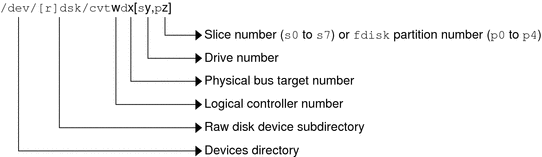
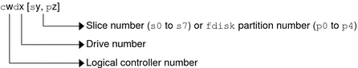
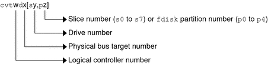
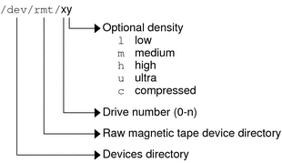

|
|||||||||||||||||||
|
1. Managing Removable Media (Overview) 2. Managing Removable Media (Tasks) 3. Accessing Removable Media (Tasks) 4. Writing CDs and DVDs (Tasks) 5. Managing Devices (Overview/Tasks) What's New in Device Management? Where to Find Device Management Tasks Managing Devices in the Solaris OS Adding a Peripheral Device to a System How to Add a Peripheral Device 6. Dynamically Configuring Devices (Tasks) 7. Using USB Devices (Overview) 9. Using InfiniBand Devices (Overview/Tasks) 11. Administering Disks (Tasks) 12. SPARC: Adding a Disk (Tasks) 13. x86: Adding a Disk (Tasks) 14. Configuring Solaris iSCSI Targets and Initiators (Tasks) 15. Configuring and Managing the Solaris Internet Storage Name Service (iSNS) 16. The format Utility (Reference) 17. Managing File Systems (Overview) 18. Creating UFS, TMPFS, and LOFS File Systems (Tasks) 19. Mounting and Unmounting File Systems (Tasks) 20. Using The CacheFS File System (Tasks) 21. Configuring Additional Swap Space (Tasks) 22. Checking UFS File System Consistency (Tasks) 23. UFS File System (Reference) 24. Backing Up and Restoring File Systems (Overview) 25. Backing Up Files and File Systems (Tasks) 26. Using UFS Snapshots (Tasks) 27. Restoring Files and File Systems (Tasks) 28. UFS Backup and Restore Commands (Reference) 29. Copying UFS Files and File Systems (Tasks) |
Accessing DevicesYou need to know how to specify device names when using commands to manage disks, file systems, and other devices. In most cases, you can use logical device names to represent devices that are connected to the system. Both logical and physical device names are represented on the system by logical and physical device files. How Device Information Is CreatedWhen a system is booted for the first time, a device hierarchy is created to represent all the devices connected to the system. The kernel uses the device hierarchy information to associate drivers with their appropriate devices. The kernel also provides a set of pointers to the drivers that perform specific operations. How Devices Are ManagedThe devfs file system manages the /devices directory, which is the name space of all devices on the system. This directory represents the physical devices that consists of actual bus and device addresses. The dev file system manages the /dev directory, which is the name space of logical device names. By default, the devfsadm command attempts to load every driver in the system and attach to all possible device instances. Then, devfsadm creates the device files in the /devices directory and the logical links in the /dev directory. The devfsadm command also maintains the path_to_inst instance database. Updates to the /dev and /devices directories in response to dynamic reconfiguration events or file system accesses are handled by devfsadmd, the daemon version of the devfsadm command. This daemon is started by the service management facility when a system is booted. Because the devfsadmd daemon automatically detects device configuration changes generated by any reconfiguration event, there is no need to run this command interactively. For more information, see the following references:
Device Naming ConventionsDevices are referenced in three ways in the Solaris OS.
The preceding device name information is displayed with the following commands:
Logical Disk Device NamesLogical device names are used to access disk devices when you perform the following tasks:
Many administration commands take arguments that refer to a disk slice or file system. Refer to a disk device by specifying the subdirectory to which it is symbolically linked, either /dev/dsk or /dev/rdsk, followed by a string identifying the particular controller, disk, and slice. Figure 5-1 Description of Logical Device NamesSpecifying the Disk SubdirectoryDisk and file administration commands require the use of either a raw (or character) device interface, or a block device interface. The distinction is made by how data is read from the device. Raw device interfaces transfer only small amounts of data at a time. Block device interfaces include a buffer from which large blocks of data are read at once. Different commands require different interfaces:
The following table shows which interface is required for some commonly used disk and file system commands. Table 5-3 Device Interface Type Required by Some Frequently Used Commands
Direct and Bus-Oriented ControllersYou might access disk partitions or slices differently depending upon whether the disk device is connected to a direct or bus-oriented controller. Generally, direct controllers do not include a target identifier in the logical device name. The conventions for both types of controllers are explained in the following subsections. Note - Controller numbers are assigned automatically during system initialization. The numbers are strictly logical and imply no direct mapping to physical controllers. x86: Disks With Direct ControllersTo specify a slice on a disk with an IDE controller on an x86 based system, follow the naming convention shown in the following figure. Figure 5-2 x86: Disks With Direct ControllersTo indicate the entire Solaris fdisk partition, specify slice 2 (s2). If you have only one controller on your system, w is usually 0. Disks With Bus-Oriented ControllersTo specify a slice on a disk with a bus-oriented controller, SCSI for instance, follow the naming convention shown in the following figure. Figure 5-3 Disks With Bus-Oriented ControllersOn a SPARC based system with directly connected disks such as the IDE disks on an UltraSPARC® system, the naming convention is the same as that for systems with bus-oriented controllers. If you have only one controller on your system, w is usually 0. For SCSI controllers, x is the target address set by the switch on the back of the unit, and y is the logical unit number (LUN) of the drive attached to the target. If the disk has an embedded controller, y is usually 0. For more information about SCSI addressing on SPARC based systems, see the SunSolveSM Info Doc 48041 and scsi_address(9S). To indicate the whole disk, specify slice 2 (s2). Logical Tape Device NamesLogical tape device files are found in the /dev/rmt/* directory as symbolic links from the /devices directory. Figure 5-4 Logical Tape Device NamesThe first tape device connected to the system is 0 (/dev/rmt/0). Tape density values (l, m, h, c, and u) are described in Chapter 30, Managing Tape Drives (Tasks). Logical Removable Media Device NamesSince removable media is managed by removable media management services, the logical device name is usually not used unless you want to mount the media manually. The logical device name that represents the removable media devices on a system are described in Chapter 3, Accessing Removable Media (Tasks). |
||||||||||||||||||
|